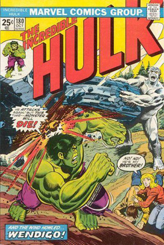

Wolverine (palavra em inglês para "carcaju" ou "glutão", um tipo de mustelídeo das florestas do Canadá), é um personagem fictício, um herói de histórias em quadrinhos publicados pela Marvel Comics. A primeira aparição do personagem foi na revista de HQ Incredible Hulk #180 (outubro de 1974) e foi criado pelo escritor Len Wein e pelo diretor de arte John Romita, que desenvolveu o personagem. Ele foi desenhado pela primeira vez para publicação por Herb Trimpe.
A primeira aparição de Wolverine foi na revista The Incredible Hulk #180, em Outubro de 1974, em história escrita por Len Wein e desenhada por Herb Trimpe. A partir daí, o personagem fez aparições em várias publicações da Marvel Comics, até fazer sua maior participação em The Incredible Hulk #181, em Novembro de 1974 novamente em história de Wein e Trimpe. John Romita desenhou o personagem em uniforme amarelo e azul e foi apresentado apenas como sendo um agente super-humano do governo canadense. Nessas aparições, suas garras não eram mostradas retráteis, embora Len Wein já tenha dito que elas sempre foram desenhadas com essa idéia.
Wolverine é famoso pela baixa estatura (1,60m), recebendo por muitas vezes a alcunha de "baixinho". O adamantium em seus ossos o deixa bastante pesado, isso faz com que seus músculos sejam mais desenvolvidos e seus golpes mais impactantes, pois em teoria seus oponentes recebem golpes de um punho com ossos de metal indestrutíveis. É mestre em várias modalidades de combate desarmado e armado (armas brancas e de fogo), já tendo treinado com grandes mestres orientais e tendo sido agente secreto de elite das maiores instituições de espionagem do mundo. É poliglota, sendo fluente em japonês e espanhol.
A principal característica de Wolverine é sua selvageria animal, que aliada a uma inabalável força de vontade, faz com que ele seja temido e respeitado pela maioria dos personagens da Marvel, apesar de não possuir poderes cósmicos.
Seu principal poder mutante é o chamado Regeneração Celular, dom que lhe permite curar-se de qualquer ferimento ou envenenamento rapidamente, além de não ficar doente e poder recuperar quase órgãos inteiros, através de uma imensa capacidade de regeneração celular. Wolverine já teve o próprio cérebro destruído por suas garras quando teve o corpo invadido por um vírus tecnorgânico e se recuperou. Provavelmente é esse poder que diminui assustadoramente seu envelhecimento.
Sentidos aguçados e garras retráteis Além do fator de cura, Wolverine possui sentidos super aguçados, podendo rastrear o alvo pelo cheiro (como um lobo), tendo também audição e visão superiores a de um humano normal. Possui também 6 garras retráteis de 30 cm (3 em cada braço) que saem de seus antebraços por meio de contração muscular, como qualquer outro movimento. Essas garras, bem como seu esqueleto, foram recobertas artificialmente com o metal Adamantium, deixando seus ossos e garras indestrutíveis e transformando Wolverine em uma perfeita máquina de combate.
CONHEÇA NOSSOS FILMES